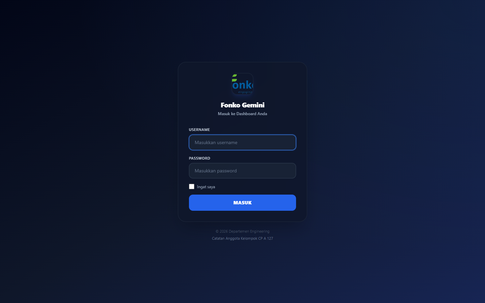
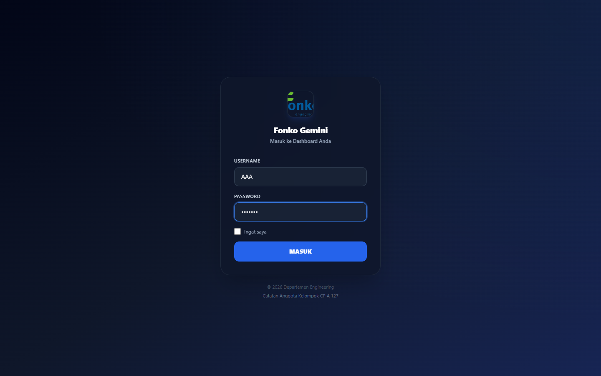
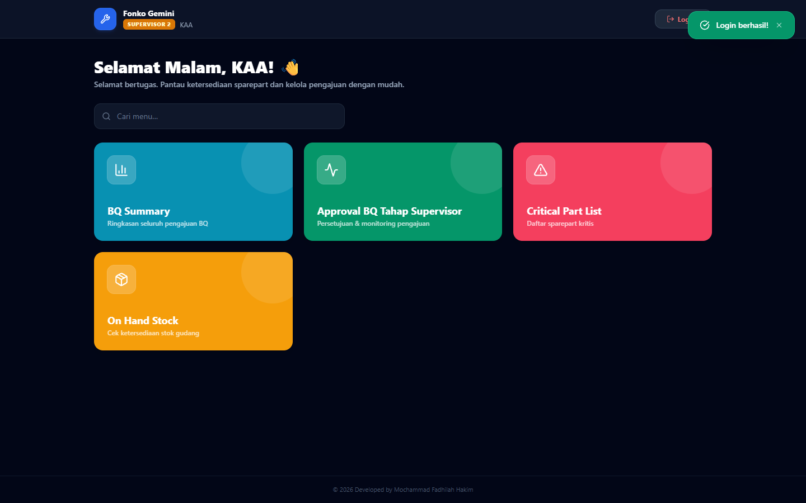
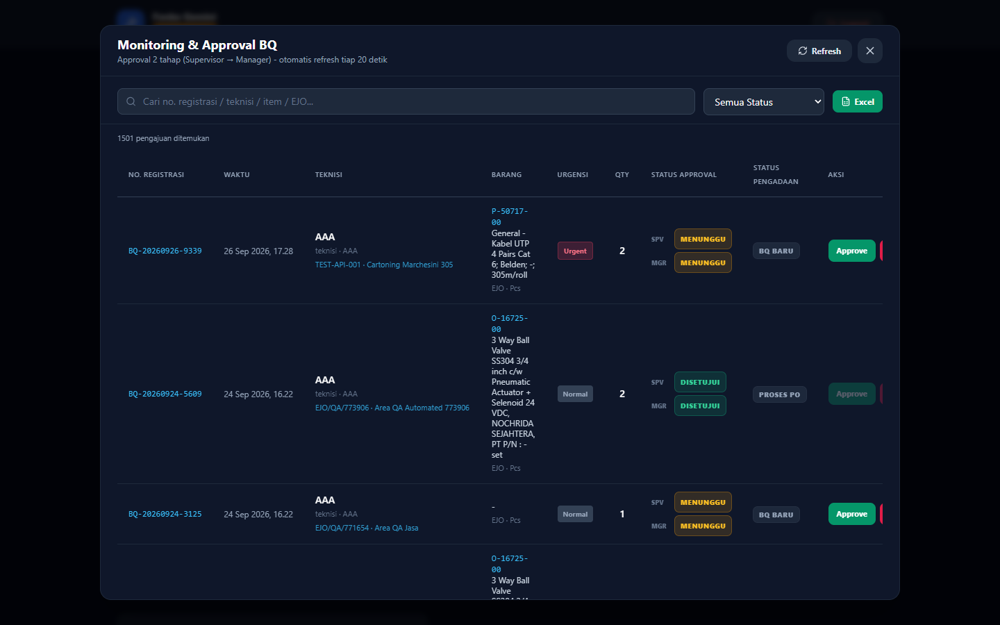
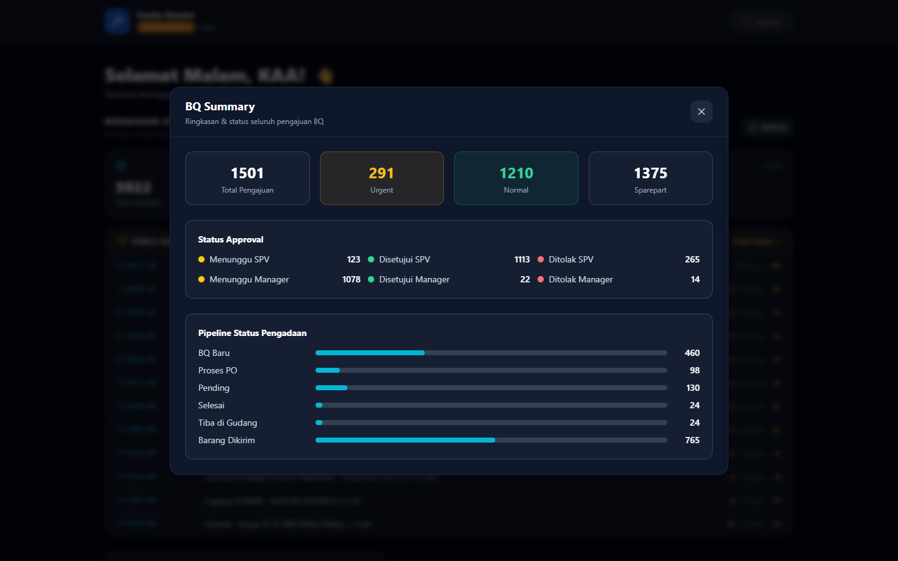
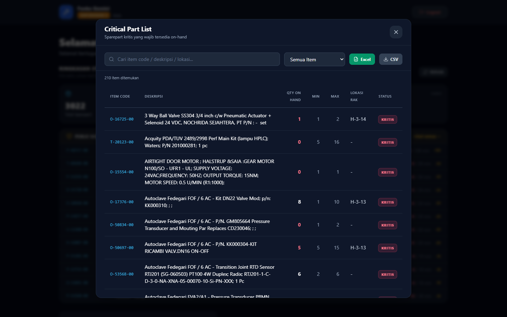
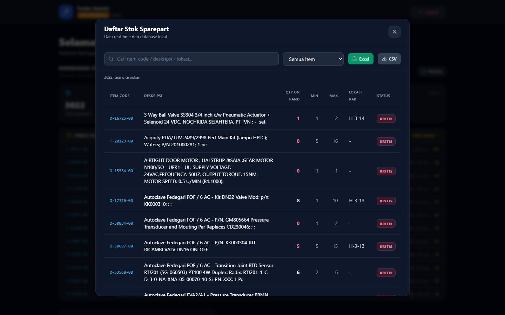
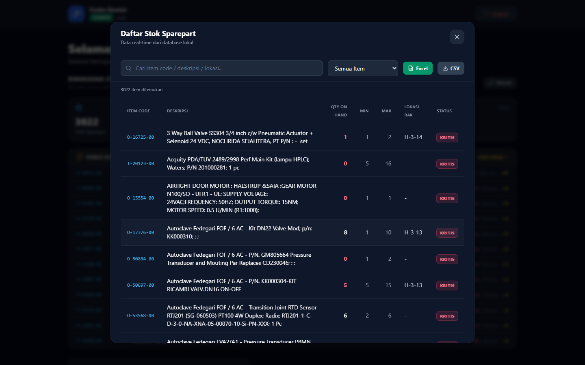
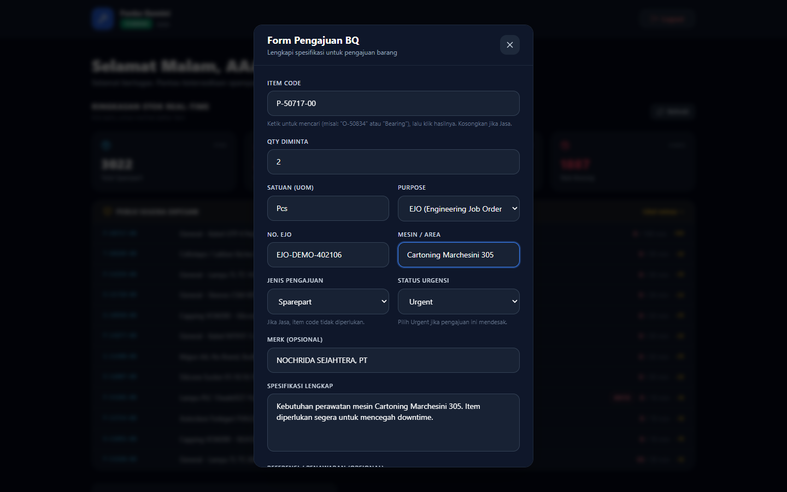
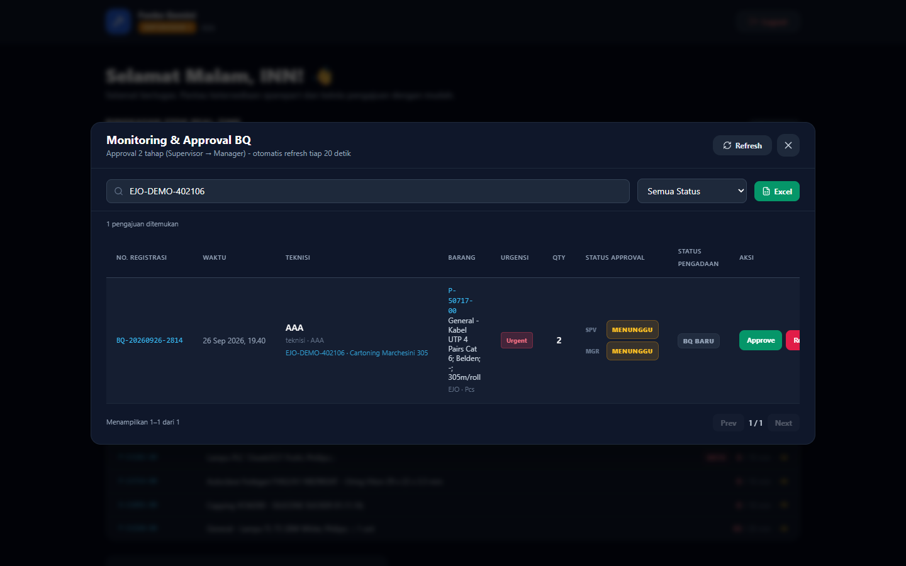

Capstone Kelompok A 127 · STSI4401 · Universitas Terbuka
Galeri Mock-up & Hasil Produk — Micropage E-Sparepart
Kumpulan tangkapan layar seluruh menu aplikasi untuk setiap peran pengguna, disusun otomatis
sebagai bukti visual M3 (finalisasi arsitektur & wireframe) dan
M5 (foto/data hasil produk). Setiap gambar diambil langsung dari aplikasi yang berjalan,
bukan desain konsep — sehingga sekaligus menjadi mock-up yang sudah terimplementasi.
1. Halaman Masuk RBAC
Gerbang aplikasi. Setiap pengguna masuk sesuai perannya; menu dan hak akses menyesuaikan posisi/jabatan.

Halaman login00-login.png

Login terisi kredensial00-login-terisi.png
2. Teknisi — 3 menu FORM BQ · STOK · BQ SUMMARY
Teknisi mengajukan pembelian barang/jasa lewat formulir digital, mengecek ketersediaan stok fisik
beserta lokasi rak (on-hand stock), dan memantau status pengajuannya sendiri.
Supervisor 1 melakukan review dan persetujuan tahap pertama, menentukan kategori
Normal/Urgent, serta mengakses ringkasan Purchase Request dan laporan bulanan.
Monthly Report (grafik)02-spv1-report.pngBQ Summary seluruh tim02-spv1-bqsummary.pngCritical Sparepart List02-spv1-critical.pngOn Hand Stock02-spv1-stok.png
4. Supervisor 2 — 4 menu APPROVAL TIM
Supervisor 2 memantau dan menyetujui pengajuan dari timnya masing-masing — sesuai pembagian tim di Departemen Engineering.

Dashboard Supervisor 203-spv2-dashboard.png

Approval BQ03-spv2-monitoring.png

BQ Summary03-spv2-bqsummary.png

Critical Part03-spv2-critical.png

On Hand Stock03-spv2-stok.png
5. Officer Penagihan — 4 menu PENAGIHAN
Officer mengikuti timnya, menyetujui pengajuan, dan memantau daftar suku cadang kritis.
Critical Part04-officer-critical.pngOn Hand Stock04-officer-stok.png
6. Manager — 5 menu APPROVAL URGENT · EXECUTIVE VIEW
Manager memberikan persetujuan akhir khusus pengajuan kategori Urgent, memantau stok kritis,
serta melihat laporan bulanan sebagai dasar keputusan manajerial.
7. Bukti Alur Berjalan End-to-End TEKNISI → SPV → MANAGER
Bukti satu pengajuan nyata berjalan melewati seluruh tahapan sistem: dicek stoknya oleh Teknisi,
diajukan lewat formulir digital, disetujui Supervisor, disetujui Manager (karena kategori Urgent),
hingga tercatat dalam audit trail dan masuk ke laporan bulanan.

1. Teknisi mengecek stok & lokasi rak06-alur-cek-stok.png

2. Formulir pengajuan digital terisi06-alur-form-bq-terisi.png3. Pengajuan tampil di BQ Summary (Menunggu SPV)06-alur-bqsummary-teknisi.png

4. Supervisor: pengajuan masuk antrean persetujuan06-alur-approval-spv-sebelum.png